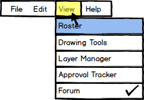
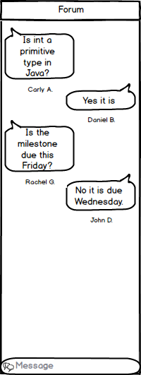

The user selects 'View' from the menu bar. Then selecting 'Forum' displays the Forum.
Figure 1 shows the 'View' item expanded from the menu bar.

Figure 1: Expansion of View in Menu Bar
To use the forum tool, the user goes into 'View' under the menu bar and selects 'Forum'. The 'Forum' is where the presentor and students can chat with each other to ask questions, answer questions, and keep a log of questions asked during class.
Figure 2 shows the 'Forum'.

Figure 2: Forum
The user can type in the area labeled 'Message' any questions or information they want to share with the class and
press 'Enter' on their keyboard to post the message to the forum.